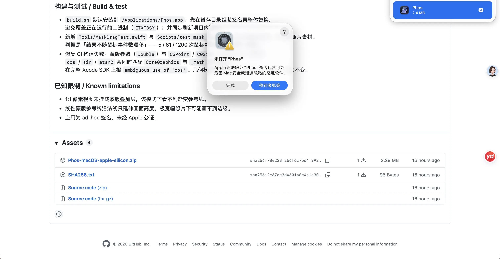
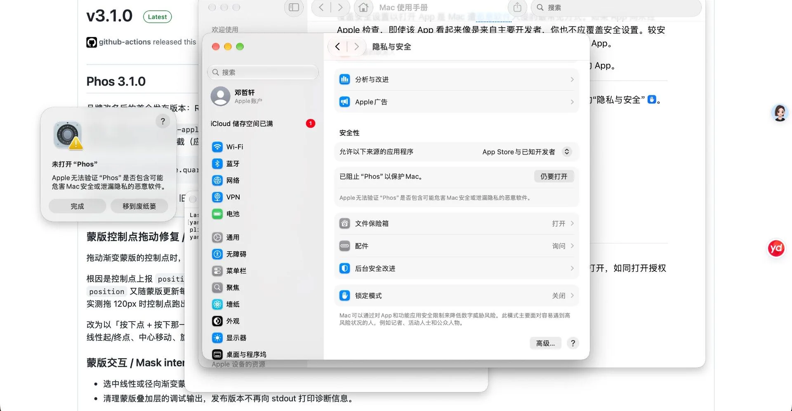

安装与下载帮助
四步就能开始修图。
Phos 目前没有做 Apple 公证，所以首次打开需要手动放行一次，之后不会再问。这是 macOS 对所有未公证应用的统一处理，不是 Phos 独有的问题。


下载并打开磁盘映像
点页面上的「下载 macOS 版」按钮，或直接访问 这个直链，下载 Phos-macOS-apple-silicon.dmg，双击打开。
拖进「应用程序」
映像窗口里把 Phos 拖到旁边的「应用程序」文件夹，然后弹出映像即可。
首次打开时放行
Phos 是本地签名、未做 Apple 公证，所以第一次会被拦一次。双击 Phos，点弹窗里的「完成」关掉它，然后立刻打开「系统设置 → 隐私与安全性」，滚到最下面点「仍要打开」。
那个按钮在弹窗出现后大约一小时就会消失，所以要马上点。之后双击就能正常打开了。
嫌麻烦就用一条命令
在「终端」里执行下面这行，可以直接去掉隔离标记，之后双击即可打开：
xattr -dr com.apple.quarantine /Applications/Phos.app
免费，开源，照片不上传。
没有账号，没有订阅，没有云端上传。你的照片始终留在自己的 Mac 上。
需要 macOS 26.0 或更高版本 · Apple 芯片 · MIT 协议 · 当前版本 v4.3.0（7.32 MB）
下载渠道 · 慢就换一个
- 本站直链Cloudflare，推荐
- jsDelivr CDN国内有节点
- jsDelivr 备用节点换线路再试
- GitHub Pages备用
- GitHub Releases需能访问 GitHub
以上是同一个文件，SHA256 完全一致：286e1e8f…3b7c（完整值见 SHA256.txt）。下载后可在终端执行 shasum -a 256 下载的文件.dmg 核对。
习惯用 zip 的话，这里也有一份（内容相同）。
可选：本地 AI 修图模型
- Phos-Optional-Model-Installer.zip6.7 KB · 只含脚本与校验清单
主程序里已经带了约 1.3 MB 的微调适配器，打开 AI 面板不需要再下载任何东西；但要让 AI 真正给出建议，还需要一份约 3.1 GB 的底模和一套 MLX 运行环境。这个 6.7 KB 的小包就是用来准备它们的 —— 它本身不含权重，会按固定版本从 Hugging Face 拉取并逐个文件校验 SHA256。
不安装也能正常使用全部常规编辑功能。AI 属实验性，装不装都不影响修图本身。
安装前请确认
· Apple 芯片（M 系列）的 Mac，macOS 26 及以上
· 已安装 arm64 版 Python 3.11（python.org 下载页，选 macOS 64-bit universal2 installer）
· 至少 8 GB 空闲磁盘（权重约 3.1 GB，另加 Python 与 MLX 依赖）
· 首次安装需要联网，要能访问 pypi.org 与 huggingface.co
· 16 GB 统一内存是本机测试配置，8 GB 未验证
三步装好
- 装 Python 3.11。从上面的链接下载安装包，双击装完。终端里执行
python3.11 --version能打印出版本号，就说明装好了。 - 解压，双击「安装模型.command」。如果 macOS 提示「无法验证开发者」，右键点这个文件 →「打开」→ 再点一次「打开」。会弹出一个终端窗口开始安装。
国内网络连不上 Hugging Face 的话，改双击「国内网络安装.command」，见下一节。 - 等它跑完。先装固定版本的 MLX 依赖，再从 Hugging Face 下载模型（约 3.1 GB，看网速），最后逐个文件校验 SHA256。看到「安装并校验完成」就是好了。
国内网络怎么装
安装脚本默认从 huggingface.co 拉模型、从 pypi.org 拉依赖。这两个地址在部分网络下会连不上或极慢，尤其是 Hugging Face。不用代理也能装。
最简单的办法：解压后双击「国内网络安装.command」（4.0.1 起随包提供）。它会把两个下载源换成 hf-mirror 与清华 PyPI 镜像，其余流程和普通安装完全一样，不需要碰终端。
想手动跑、或者想自己指定别的镜像，就在解压后的文件夹里打开终端（文件夹上右键 →「服务」→「新建位于文件夹位置的终端窗口」），粘贴执行：
HF_ENDPOINT=https://hf-mirror.com \
PIP_INDEX_URL=https://pypi.tuna.tsinghua.edu.cn/simple \
python3.11 install_model.py镜像只影响从哪里下载，不改变校验：模型文件仍会按清单逐个比对 SHA256，镜像上的文件只要有一个字节不对就会报错停下，不会装进坏文件。想先确认镜像通不通，直接打开 hf-mirror.com 上的模型页 看看。
Python 安装包从 python.org 下得慢的话，可以用华为云镜像：mirrors.huaweicloud.com/python，挑 3.11.x 的 macOS universal2 安装包。
装完怎么用
默认装在 ~/Library/Application Support/Phos/MLX，Phos 会自动找到它 —— 打开任意照片，在调整面板顶部点「AI 修图」就能用，不需要再做配置。
想装到别处：终端执行 python3.11 install_model.py --environment /绝对路径/新的Phos-MLX，装完后在应用里走「AI 修图 → 选择模型环境」，选那个同时包含 .venv 和 model 的外层文件夹。
检查是否装好：python3 install_model.py --verify-only。想卸载，直接删掉那个文件夹即可。
常见问题
提示「请先安装 Apple Silicon Python 3.11」
要么没装，要么装成了 Intel 版。从 python.org 重新下载 universal2 安装包；装完在终端跑一次 python3.11 --version 确认，再双击「安装模型.command」。
下载到一半失败了怎么办
脚本不会覆盖已有环境，中断后现场会保留。换一个能稳定访问 Hugging Face 的网络，重新双击「安装模型.command」即可；也可以先用 --environment 指定一个全新的空目录重装。脚本不会自动切换到未审核的镜像站。
我只下载了模型文件，为什么还是用不了
权重和运行环境是两件事。只把 .safetensors 放进目录不会有 MLX 依赖，必须由这个安装包装好 .venv。两者都齐了，Phos 才能启动本地推理服务。
装好后能移动或复制那个文件夹吗
不建议移动。里面的 .venv 记录的是绝对解释器路径，换位置会失效。要换地方，用 --environment 重新装一份。
AI 会把我的照片传到哪里吗
不会。推理在本机的 127.0.0.1 上跑，照片不离开这台 Mac。只有安装阶段下载模型和依赖时需要联网。
底模是 mlx-community/Qwen3-VL-4B-Instruct-4bit（固定版本 2fd8dacb…；国内镜像见 hf-mirror），许可为 Apache-2.0，来源说明与许可原文随应用内 PhotoAIAdapter 目录一并保留。Phos 的学术用途声明不改变第三方模型的授权条件。
Windows 版 · 实验性移植
- Phos-4.0.1-Windows-x64.zip323 MB · Windows 11 x64
从 macOS 4.0.1 的源码移植而来，与 macOS 版分开维护，版本号也不同步。解压后双击根目录的 Phos.exe，它必须和 app\ 文件夹放在同一目录。
它和 macOS 版不完全一样。Apple 的 Vision 与 Core Image 换成了本地实现（MODNet / BiRefNet / OpenCV / D3D11），主体分割、边缘和色彩结果可能有差异；不含本地 AI 修图；也没有 macOS 4.1 那一轮的界面更新（高级编辑、玻璃统一、裁剪热区、自动水平）。
未做代码签名，首次运行会被 Windows SmartScreen 拦下，需要点「更多信息 → 仍要运行」。完整的差异与已知限制见 发布说明。